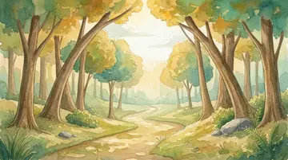

Nature Seed راستہ بنائیں۔ دونوں کو ملائیں۔
ایک مفت فزکس پہیلی جو لکیر کھینچ کر حل ہوتی ہے اور آپ اسے اپنے براؤزر میں کھیل سکتے ہیں۔ محدود سیاہی سے لکیر کھینچیں تو وہ ڈھلان، پل یا کیچ پوائنٹ بن کر Water Drop کو Seed تک پہنچاتی ہے۔ ہر حل کیا گیا لیول واٹر کلر جنگل کا ایک منظر بحال کرتا ہے۔
18 ستمبر 2026 کو 100 لیولز، لکیروں کی کارکردگی کے ستاروں اور محفوظ پیش رفت کے ساتھ جاری ہوا۔ یہ itch.io، Game Jolt اور indiexpo پر مفت ہے؛ iOS اور Android ورژن ہدف ہے اور ابھی ایپ اسٹورز پر نہیں ہے۔
لکیر کھینچیںمحدود سیاہی سے بنائیں
ملاپWater Drop کو Seed تک پہنچائیں
کھلناجنگل کو واپس لائیں
موجودہ بلڈ کے اندر
جو آپ بناتے ہیں وہ لیول کا حصہ بن جاتا ہے۔
آپ کی کھینچی ہر لکیر ایک ٹھوس چیز بن جاتی ہے جس میں اصلی ٹکراؤ ہوتے ہیں، اور Water Drop اور Seed اس پر ردعمل دیتے ہیں۔ سیاہی اور لکیروں کی تعداد دونوں محدود ہیں، اس لیے لکیر کی شکل اہم ہے۔
ریلیز کی حیثیت 18 ستمبر 2026 کو جاری ہوا۔

گیم کا جائزہ
ایک پرسکون ڈرائنگ پہیلی، جس کا مقصد دو چھوٹے کرداروں کو ملانا ہے۔
خیال
راستہ کھینچیں، Water Drop اور Seed کو ملائیں اور خاموش خاکے کو دوبارہ جان پاتے دیکھیں۔
لانچ بلڈ
ٹچ ڈرائنگ کے ساتھ 100 قابلِ کھیل لیولز، لکیروں کی کارکردگی کے ستارے اور سیشنز کے درمیان محفوظ پیش رفت۔
ہدف مخاطبین
وہ کھلاڑی جنہیں پرسکون پہیلیاں، ہلکی فزکس، فطرت کے موضوعات اور بغیر ٹینشن کے موبائل سیشنز پسند ہیں۔
اسٹیٹس
18 ستمبر 2026 کو جاری ہوا اور اپنے براؤزر میں مفت کھیلا جا سکتا ہے۔ موبائل ورژن ہدف ہے؛ یہ ابھی ایپ اسٹورز پر نہیں ہے۔
خصوصیات
Nature Seed میں آپ کیا کرتے ہیں۔
ڈرائنگ سے حل ہونے والے فزیکل راستے
ہر پہیلی زمین، Seed اور Water Drop سے شروع ہوتی ہے۔ کھلاڑی کی کھینچی ہوئی لکیر وہ ڈھلان، پل یا کیچ پوائنٹ بن جاتی ہے جو انہیں ملاتا ہے۔
واضح فزکس فیڈ بیک
Water Drop اور Seed ایسے انداز میں حرکت کرتے ہیں جنہیں آپ سمجھ سکتے ہیں، اس لیے ناکام کوشش بتاتی ہے کہ کیا بدلنا ہے۔
جنگلات کی بحالی کے انعامات
کوئی لیول مکمل کریں تو خاکے والا منظر رنگوں اور اگتے ہوئے درختوں سے بھر جاتا ہے۔
مختصر لیولز، ٹچ سے ڈرائنگ
لیولز مختصر ہیں اور آپ ٹچ سے ڈرا کرتے ہیں، جو فون پر جلدی کھیلنے کے لیے موزوں ہے۔
گیم پلے لوپ
Nature Seed کیسے کھیلیں
- مرحلہ 01خاکہ پڑھیں
ڈھلانوں، خالی جگہوں اور رکاوٹوں پر نظر رکھیں اور دونوں کرداروں کو ملانے کا سب سے محفوظ راستہ ڈھونڈیں۔
- مرحلہ 02لکیر کھینچیں
اپنی لکیر کھینچیں۔ یہ لکیر کرداروں کے لیے ڈھلان، رہنما یا کیچ پوائنٹ بن جاتی ہے۔
- مرحلہ 03طے کریں اور دیکھیں
لکیر پکی کریں اور کرداروں کا ردعمل دیکھیں۔ آپ دیکھ لیں گے کہ کیا کام آیا اور کیا نہیں۔
- مرحلہ 04پھول کھلائیں یا بہتر بنائیں
اگر Water Drop Seed تک پہنچ جائے تو جنگل لوٹ آتا ہے۔ اگر وہ چوک جائیں تو ابھی جو سیکھا اس کے ساتھ دوبارہ لکیر کھینچیں۔
کہانی / دنیا
خاکے کی صورت میں بنا ایک جنگل پانی کا منتظر ہے۔
Nature Seed ڈرائنگ سے حل ہونے والی فزکس پہیلی کے طور پر شروع ہوا، جو چیزوں کو ایک دوسرے کی طرف دھکیلنے کی بجائے کسی نازک چیز کو بحال کرنے کے بارے میں تھی۔
کرداروں میں Seed، Water Drop اور ایک جنگل ہے جو کھیلتے ہوئے خاکے سے رنگوں میں لوٹ آتا ہے۔ ہر پہیلی ایک چھوٹا کام ہے: زمین کا جائزہ لیں، راستہ کھینچیں اور پانی کو کسی ایسی چیز تک پہنچنے میں مدد دیں جو اُگ سکے۔
- ڈیزائن کی سمت
- پرسکون فزکس اور نظر آنے والی بحالی
- کردار
- Water Drop اور Seed
- تعامل
- ٹچ ڈرائنگ
- مہارت کا انعام
- ایک لائن کا حل تین ستارے حاصل کرتا ہے۔
ایک نظر میں
آج براؤزر میں مفت، اور ہدف موبائل ہے۔
آپ کے پاس محدود سیاہی اور محدود تعداد میں لکیریں ہیں۔ انہیں Water Drop کو Seed تک پہنچانے میں لگائیں، پھر لیول دوبارہ کھیلیں اور اپنا حل ایک لکیر تک گھٹائیں تاکہ تین ستارے ملیں۔
- صنف
- ڈرائنگ سے حل ہونے والی فزکس پہیلی
- پلیٹ فارم کا ہدف
- iOS / Android
- سیشن کی شکل
- مختصر پرسکون لیولز
مواد ڈاؤن لوڈ کریں
Nature Seed پریس اور تخلیق کار کے مواد
پریس کوریج، پبلشر ریویو اور اسٹور صفحے کے حوالوں کے لیے WebP پریویوز۔ مکمل ریزولوشن کی سورس فائلیں درخواست پر دستیاب ہیں۔
برانڈ اور کردار
 Water Dropنیلا کردار جسے Seed تک پہنچنا ہے۔
Water Dropنیلا کردار جسے Seed تک پہنچنا ہے۔
 Seed کردارسبز کردار جس تک Water Drop پہنچنے کی کوشش کر رہا ہے۔
Seed کردارسبز کردار جس تک Water Drop پہنچنے کی کوشش کر رہا ہے۔
 درخت کی نشوونماوہ درخت جو حل کے بعد اگتا ہے۔
درخت کی نشوونماوہ درخت جو حل کے بعد اگتا ہے۔
 جنگل کا مینومین مینو کا پس منظر۔
جنگل کا مینومین مینو کا پس منظر۔
 گیم پلے کا پس منظرخالی کھیل کے علاقے والا لیول کا پس منظر۔
گیم پلے کا پس منظرخالی کھیل کے علاقے والا لیول کا پس منظر۔
ڈرائنگ سے حل ہونے والے خاکہ لیولز
 خاکہ لیول 01حل سے پہلے خاکہ۔
خاکہ لیول 01حل سے پہلے خاکہ۔
 خاکہ لیول 02حل سے پہلے خاکہ۔
خاکہ لیول 02حل سے پہلے خاکہ۔
 خاکہ لیول 03حل سے پہلے خاکہ۔
خاکہ لیول 03حل سے پہلے خاکہ۔
 خاکہ لیول 04حل سے پہلے خاکہ۔
خاکہ لیول 04حل سے پہلے خاکہ۔
 خاکہ لیول 05حل سے پہلے خاکہ۔
خاکہ لیول 05حل سے پہلے خاکہ۔
 خاکہ لیول 06حل سے پہلے خاکہ۔
خاکہ لیول 06حل سے پہلے خاکہ۔
 خاکہ لیول 07حل سے پہلے خاکہ۔
خاکہ لیول 07حل سے پہلے خاکہ۔
 خاکہ لیول 08حل سے پہلے خاکہ۔
خاکہ لیول 08حل سے پہلے خاکہ۔
 خاکہ لیول 09حل سے پہلے خاکہ۔
خاکہ لیول 09حل سے پہلے خاکہ۔
 خاکہ لیول 10حل سے پہلے خاکہ۔
خاکہ لیول 10حل سے پہلے خاکہ۔
بحال شدہ پہیلی کے مناظر
 بحال شدہ لیول 01حل کے بعد بحال ہوا۔
بحال شدہ لیول 01حل کے بعد بحال ہوا۔
 بحال شدہ لیول 02حل کے بعد بحال ہوا۔
بحال شدہ لیول 02حل کے بعد بحال ہوا۔
 بحال شدہ لیول 03حل کے بعد بحال ہوا۔
بحال شدہ لیول 03حل کے بعد بحال ہوا۔
 بحال شدہ لیول 04حل کے بعد بحال ہوا۔
بحال شدہ لیول 04حل کے بعد بحال ہوا۔
 بحال شدہ لیول 05حل کے بعد بحال ہوا۔
بحال شدہ لیول 05حل کے بعد بحال ہوا۔
 بحال شدہ لیول 06حل کے بعد بحال ہوا۔
بحال شدہ لیول 06حل کے بعد بحال ہوا۔


بحال شدہ لیول 07حل کے بعد بحال ہوا۔ بحال شدہ لیول 08حل کے بعد بحال ہوا۔
بحال شدہ لیول 08حل کے بعد بحال ہوا۔
 بحال شدہ لیول 09حل کے بعد بحال ہوا۔
بحال شدہ لیول 09حل کے بعد بحال ہوا۔
 بحال شدہ لیول 10حل کے بعد بحال ہوا۔
بحال شدہ لیول 10حل کے بعد بحال ہوا۔
ڈیولپمنٹ ٹائم لائن
Nature Seed کی ڈیولپمنٹ ٹائم لائن
- گرمیوں 2025اصل تصور
Nature Seed کی شروعات ایک پرسکون موبائل پہیلی کے خیال سے ہوئی، جو تعلق اور فطرت کی بحالی کے بارے میں تھی۔
- اکتوبر 2025Seed اور Water Drop شناخت
ہم نے ڈیزائن دستاویز مکمل کی اور Seed اور Water Drop کو مرکزی کردار بنانے کا فیصلہ کیا۔
- دسمبر 2025ترقی کا آغاز
ہم نے پہلے لیولز کاغذ پر پلان کیے، پھر بنانا شروع کیا، اور بنیادی نظام کھیلنے کے قابل ہو گئے۔
- فروری 2026لیولز پر بڑا ابتدائی ڈرافٹ
لیولز پر ایک بڑے ابتدائی ڈرافٹ نے ہمیں بعد کی پالش اور بیلنسنگ کے لیے بنیاد دی۔
- مارچ-اپریل 2026مکینکس اور لیولز کا جائزہ
ہم نے اضافی میکینکس اور ڈرافٹ لیولز کا جائزہ لیا، پھر گیم کو پرسکون رکھنے کے لیے انہیں سادہ کیا یا دوبارہ بنایا۔
- جولائی 2026عمودی پروٹو ٹائپ کا جائزہ
جولائی کے بلڈ نے محدود سیاہی سے ڈرائنگ، کارکردگی کے ستاروں، محفوظ پیش رفت اور مستحکم لکیر جنریشن کو ایک قابلِ کھیل لوپ میں سمو دیا۔
- 18 ستمبر 2026Nature Seed ریلیز
گیم Nature Seed کے نام سے 100 لیولز، لکیروں کی کارکردگی کے ستاروں، محفوظ پیش رفت اور واٹر کلر بحالی کے مناظر کے ساتھ جاری ہوا۔
Nature Seed کے عام سوالات
Nature Seed کے بارے میں عام سوالات
کیا Nature Seed مفت ہے؟
جی ہاں۔ آپ اسے itch.io، Game Jolt اور indiexpo پر اپنے براؤزر میں مفت کھیل سکتے ہیں۔
کیا Nature Seed جاری ہو چکا ہے؟
جی ہاں۔ یہ 18 ستمبر 2026 کو 100 لیولز کے ساتھ جاری ہوا۔ iOS اور Android ورژن ہدف پلیٹ فارم ہے اور ابھی ایپ اسٹورز پر نہیں ہے۔
Nature Seed کس قسم کا گیم ہے؟
پرسکون فزکس پہیلی جو ڈرائنگ سے حل ہوتی ہے۔ آپ کی کھینچی ہوئی لکیریں ٹھوس چیزیں بن جاتی ہیں جو Water Drop اور Seed کو ملنے میں مدد دیتی ہیں۔
Nature Seed کیسے کھیلتے ہیں؟
زمین کو پڑھیں، اپنی محدود سیاہی سے راستہ کھینچیں، پھر دونوں کرداروں کا ردعمل دیکھیں۔ اگر وہ چوک جائیں تو دوبارہ کھینچیں۔ جتنی کم لکیریں، اتنے زیادہ ستارے، اور ایک لکیر پر تین ستارے ملتے ہیں۔
Nature Seed کون بناتا ہے؟
WillowinWorlds، ایک آزاد اسٹوڈیو جو موبائل پہیلی اور آرکیڈ گیمز بناتا ہے۔
کیا میں Nature Seed کے پریس مواد استعمال کر سکتا ہوں؟
جی ہاں، پریس، پبلشر ریویو اور اسٹور کے حوالوں کے لیے۔ سورس فائلیں نجی رہتی ہیں جب تک آپ ہم سے نہ مانگیں۔
Nature Seed ڈیولاگ
کیا بدلا اور کب
- Nature Seed ریلیز
Nature Seed اپنے آخری نام کے ساتھ itch.io، Game Jolt اور indiexpo پر مفت براؤزر گیم کے طور پر جاری ہوا، جس میں 100 لیولز، لکیروں کی کارکردگی کے ستارے اور محفوظ پیش رفت ہے۔
- لیول 2 کی بحالی اور استحکام کا مرحلہ
لیول 2 اب زیادہ قابل اعتماد لیول سیٹ اپ، تصادم کی جانچ اور تکمیل کے تاثرات کے ساتھ اپنی پیداواری پس منظر کی جوڑی کا استعمال کرتا ہے۔
- جولائی 2026کھیلنے کے قابل بلڈ
جولائی کے بلڈ نے محدود سیاہی سے لکیر کھینچنے، کارکردگی کے ستاروں، محفوظ پیش رفت اور بحالی کے فیڈ بیک کو یکجا کیا۔
- اپریل 2026لیول ری ورک کا جائزہ
اندرونی جائزے کے بعد ہم نے کئی ڈرافٹ لیولز کو دوبارہ بنایا تاکہ پیچیدگی کم ہو اور فون پر انہیں سمجھنا آسان ہو۔
- مارچ 2026مکینکس کا جائزہ
ہم نے اضافی میکینکس آزمائے اور ان کو ہٹا دیا جن سے لیولز بھرے بھرے لگتے تھے۔
- فروری 2026لیولز پر بڑا ابتدائی ڈرافٹ
لیولز پر ایک بڑا ابتدائی ڈرافٹ بعد کی پالش اور بیلنسنگ کی بنیاد بن گیا۔
- دسمبر 2025ترقی کا آغاز
بنیادی نظام ڈیزائن دستاویز سے نکل کر کھیلنے کے قابل شکل میں آ گئے۔
- گرمیوں 2025اصل تصور
Nature Seed کا پہلا ورژن ایک پرسکون پہیلی کا خیال تھا، جو تعلق اور فطرت کی بحالی کے بارے میں تھا۔